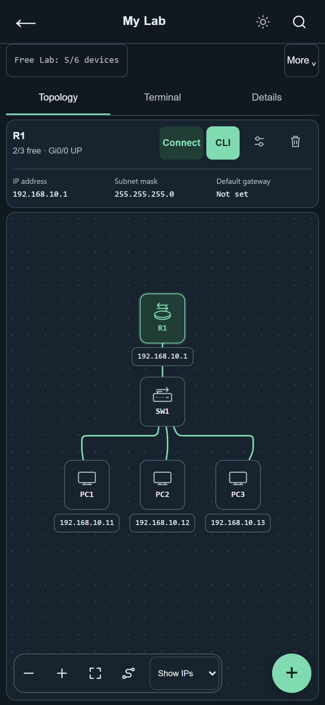
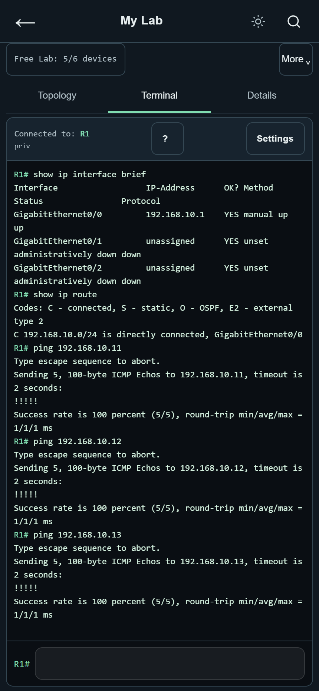
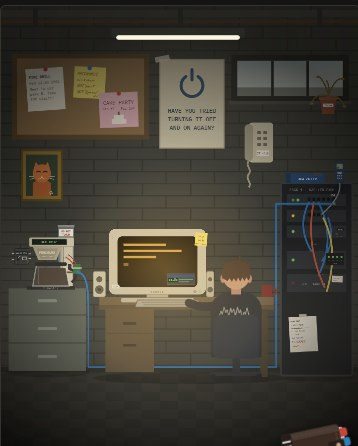
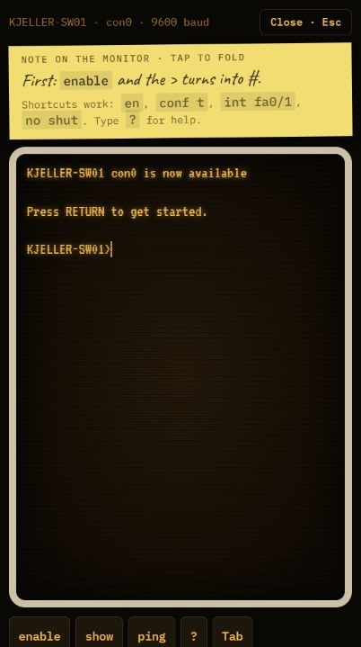

Hands-on networking practice
Build the network.
Find the fault.
Connect routers, switches, and PCs. Run Cisco IOS commands and see what changes in your network. NetCLI gives you a lab to practice in, right on your phone.
Try a quick troubleshooting exercise

01 / In the lab
A PC can’t reach the router.
You ping the router and get no reply. Before changing IP addresses or routes, check whether the router’s interfaces are up.
Practice the same process in NetCLI. Inspect the network, make one change, and test again.
R1# show ip interface brief
Interface IP-Address Status Protocol
Gi0/0 192.168.1.1 up up
Gi0/1 192.168.2.1 administratively down downThe PC is on the network behind Gi0/1. Administratively down means the interface is disabled in the configuration. In the lab, enable it with no shutdown and try the ping again.
Expand the command to see its example output.
02 / A story in the terminal

A basement in 2003.
A terminal waiting for you.
The Bloom Protocol is a story you play through Cisco IOS. Explore the network, try a command, and read the output to decide what to do next.
Stuck? Ask for a hint in the Bloom channel on Discord.
New to the server? Join NetCLI on Discord.


03 / Help and community
Learn together.
Share a lab, find someone to practice with, or explain a command that finally clicked.